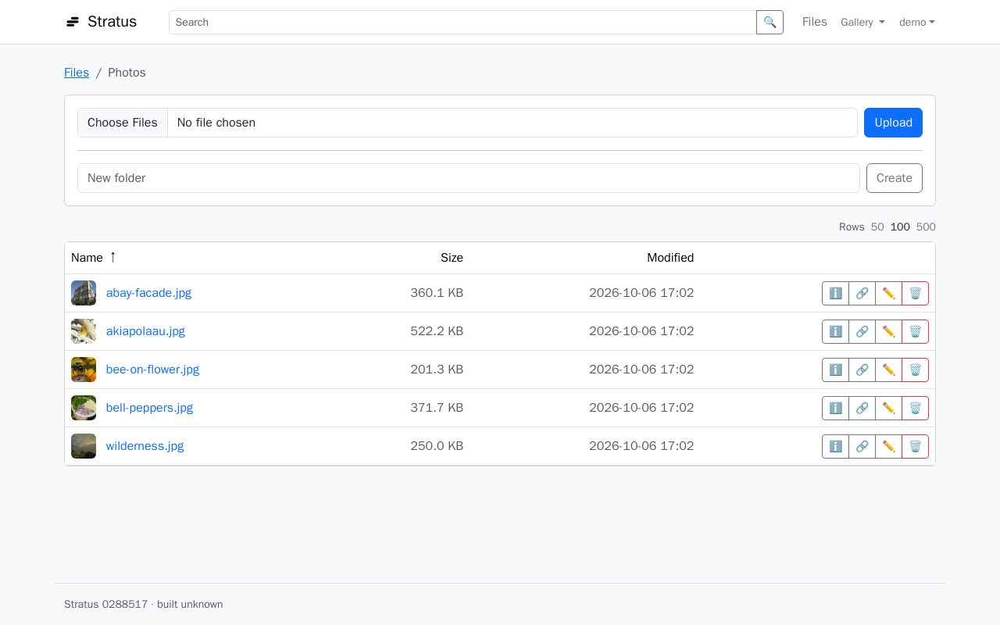
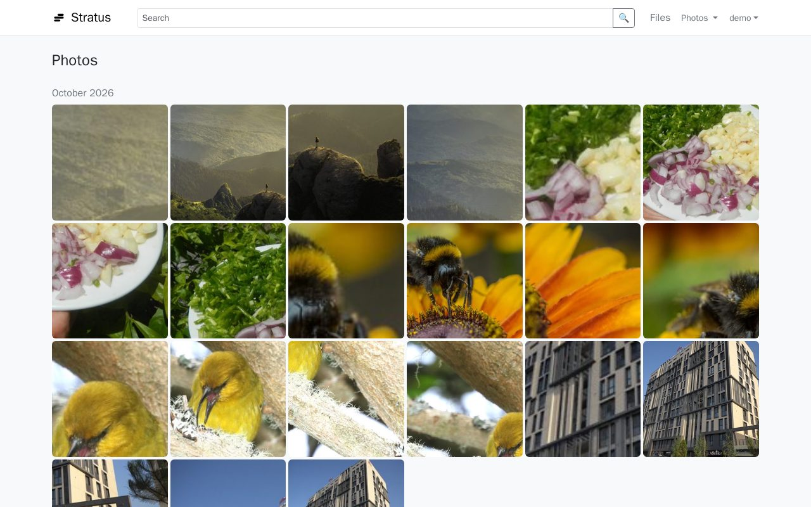
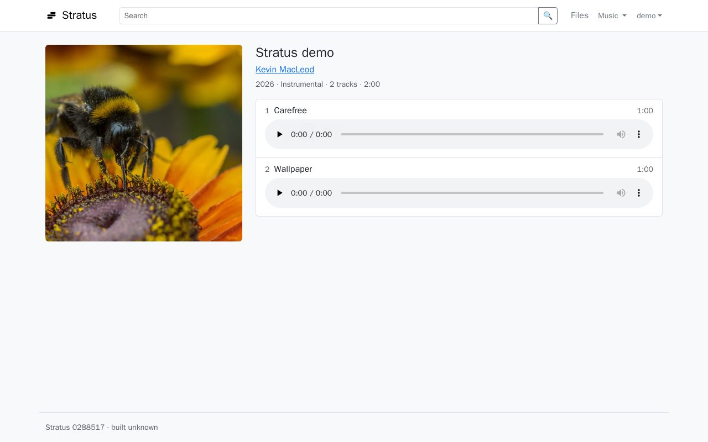

Stratus is a virtual NAS you host yourself. Similar to Nextcloud and ownCloud, but much simpler and with far lower requirements. Open source, with the backend 100% vibe-coded in Go.
- Storage on the server's own disk or in S3. Make the most of low-cost S3-compatible providers such as Backblaze B2, Wasabi or Cloudflare R2.
- Database: MySQL, PostgreSQL or SQLite.
- Templates to deploy with Docker on Fly.io, Render and Coolify.
- Android app for backups (beta).
- Single user: a truly private cloud, just for you. No permission systems or user accounts to manage.
- Popular protocols:
- Reach your files over the internet with WebDAV, from Windows, Linux and macOS.
- Cast to a Chromecast from the browser or the app.
- Listen to your music with Subsonic-compatible apps.
- Send media to a DLNA TV from the Android app.
- CalDAV and CardDAV, if you also want to sync your calendar and contacts.
Try the demo
A public instance running the latest version is at stratus-demo.dropdatabase.es.
- User
demo- Password
- the version shown at the bottom of the login page, e.g.
Stratus d5b0c1fmeans the password isd5b0c1f. It changes with every release.
Anyone can sign in and its content is reset every hour, so don't upload anything private or that you want to keep.
Screenshots


